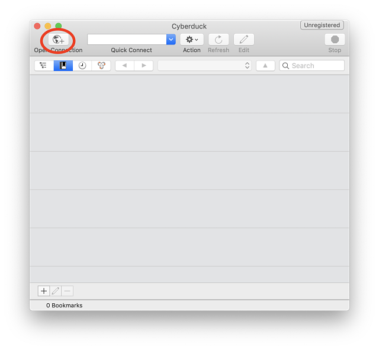
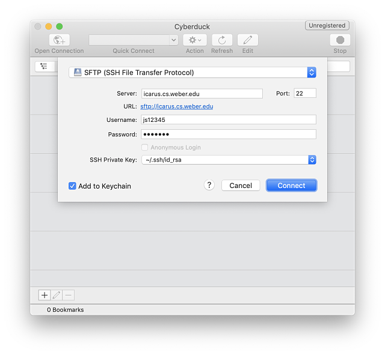
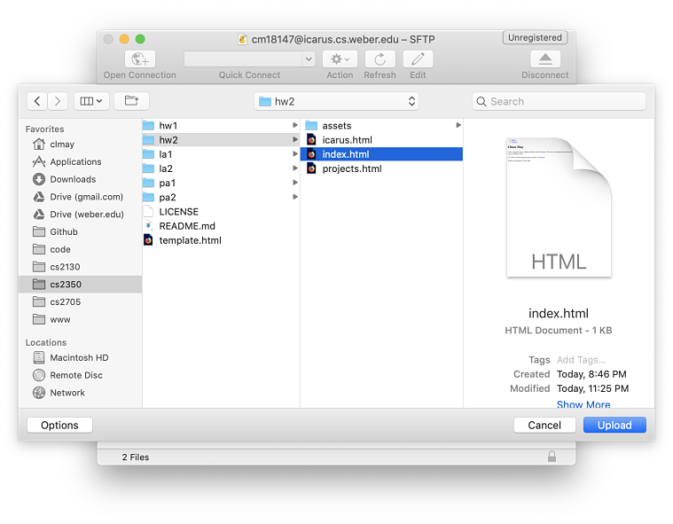
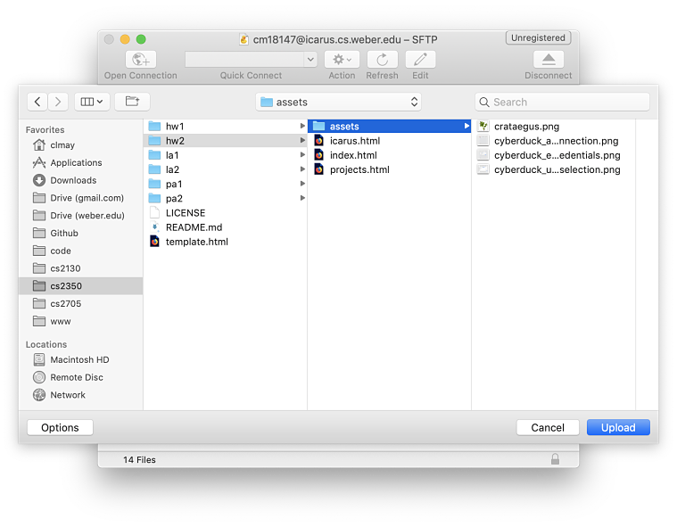
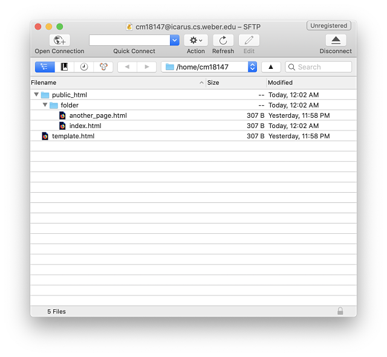

This tutorial will guide you through the process of using your Icarus server account to host a static website. It requires the installation of a couple free, open-source software tools. You should have basic familiarity with HTML, the command line, and the file explorer on your computer, but this guide is otherwise suitable for beginners.
Homebrew is a package manager that brings Linux-style package installation to macOS. It will search a repository of software packages, fetch and install packages, and resolve dependencies automatically, all in a single command. It is the de facto, though unofficial, package manager for macOS.
Installation is simple. Open Terminal.app (or your terminal emulator of choice) and run:
/usr/bin/ruby -e "$(curl -fsSL https://raw.githubusercontent.com/Homebrew/install/master/install)"
It's always a good idea to review the content of scripts before you run them, to understand what changes they perform and inspect them for dangerous code. The Homebrew install script is open source and you can view it directly at the address in the command above (linked here) for your convenience.
Cyberduck is another open-source tool for macOS that is practically standard. Cyberduck is a file transfer client that supports a number of protocols, most importantly FTP and SFTP. We will use SFTP later in the tutorial to send our files to the server. Using Homebrew, installing Cyberduck is a quick one-liner:
brew cask install cyberduck
This command fetches the package and all dependencies, installs the software, and automatically moves the app image to your /Applications directory. After that, you can open Cyberduck just like you would any other app. My personal favorite is Cmd + Space, and then just type "Cyberduck". Once you've typed a few characters, macOS should autopopulate the app's name, after which Enter will open it.
Once you have opened Cyberduck, you will need to add a connection. Click the "+" button in the upper-left and change the connection type from the default (FTP) to SFTP.
Then, fill in the connection dialog with the following information:
Your connection settings should be something like this:
After that, click "Connect" and with any luck, you will be connected to the server and your public_html directory will be shown. This is the directory where you will upload files to make them available online. Any files outside of public_html will not be accessible to visitors of your site.
Now that you're connected to the server, it's time to upload some content. Let's start by uploading an index.html within the public_html directory.
If you're anything like me, you'll enjoy the precision and brevity of the keyboard shortcuts offered by Cyberduck. Hit Option + Up to open the upload file browser. That'll open up Finder. Browse to and select the index.html file you wish to upload and click "Upload" in the bottom-right.
Take careful note of the location of the uploaded file. In my experience, a minor UX flaw in Cyberduck is that the upload process does not allow you to specify the exact upload location ahead-of-time, so the files are generally uploaded to the root level (home directory). You may need to move the uploaded file to the public_html directory before proceeding.
You can also upload a whole folder to Cyberduck, in which case it will traverse the directory recursively, creating a matching tree in the destination and uploading files as it goes. The process for uploading a folder is the same, except that you select the folder you wish to upload instead of a single file:
Now that all of your files are uploaded, you can view the results of your labor.
Icarus serves the files in your public_html directory at:
http://icarus.cs.weber.edu/~[your-username]/
e.g.
http://icarus.weber.edu/~js12345
After the user subdirectory ('~js12345'), the remainder of the path
is the same as the path to the files/folders from your public_html. That is,
a document at 'public_html/assets/image.jpg' would be available at:
http://icarus.cs.weber.edu/~js12345/assets/image.jpg
So, for the example shown in the following screenshot:
http://icarus.cs.weber.edu/~js12345/template.html
http://icarus.cs.weber.edu/~js12345/folder/another_page.html
Keep in mind that a file named 'index.html' in public_html or any of its descendants can also be accessed in the browser without specifying the filename.
E.g.'public_html/folder/index.html' can be accessed directly at
http://icarus.cs.weber.edu/~js12345/folder/
(Note: The instructor of this course has required that this tutorial also mention that the 'http://' portion of the URLs used to access the files is called the protocol, and that the 'icarus.cs.weber.edu' portion is called the hostname. However: given that these segments of the URL are constant for any users publishing to Icarus (since it does not provide HTTPS and since the hostname is beyond the user's control); and given that the scheme/protocol and hostname are both required in well-formed URLs, and indeed are part of the definition of their well-formedness; the utility of this information for the purposes of the present tutorial remains an open question, and one that is left as an exercise for the reader's imagination.)
Now that you have the tools and knowledge necessary to upload files to the free hosting platform provided with your Icarus student server account, you should be well on your way to the complete personal website of your choice. Don't forget to log out of Cyberduck when you're done, and happy coding!
Written & designed by Chase May